Radio & antenne
Spy Bug FM Transmitter (Spie a transistor)
Indice della pagina
Premessa
2013-2026
Chi è appassionato di radio, uno dei primi circuiti che va realizzare è il piccolo trasmettitore FM, ideale per mandare segnali su una comune radio FM (88-108 MHz). Negli ultimi 30 anni, lo schema è stato pubblicato in tutte le salse, su tutte le riviste del settore radio e elettronica.
Vedi l'archivio vecchie riviste http://www.introni.it/
Lo schema proposto in questa pagina è stato semplificato al massimo per riuscire a ridurre al minimo le dimensioni finali. La prestazione è ancora buona e la portata significativa...
Spy Bug FM Transmitter
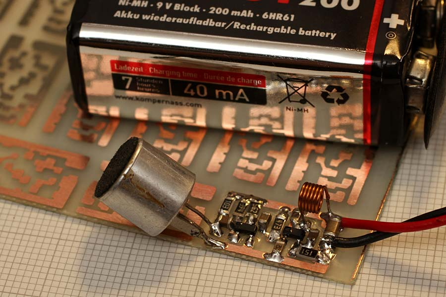
La dimensione del circuito montato è di 10x17mm e da come si vede in foto i componenti più grossi (fuori circuito) sono appunto il microfono e la batteria, è comunque possibile montare un microfono con ridotte dimensioni, lo si può prelevare dai cellulari di qualche anno fa, sono di piccole dimensioni ed ottima sensibilità..
Schema elettrico
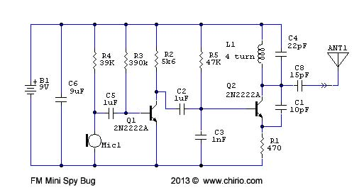
Descrizione
Per una efficace alimentazione la batteria da 9V (Duracell) è ottima e permette parecchie ore di autonomia, ma se si vuole avere dimensioni ridotte al massimo è meglio usare 2 o 3 celle litio tipo le 2032 usate nei PC.
Il circuito funziona bene da 3 a 12V, la massima portata si ottiene con 12V e un pezzo di cavo da 40-60cm come antenna.
Per andare a 3,7-4V modificare R4 a 10K e R1 a 150ohm.
La lunghezza antenna varia in funzione della frequenza di uscita, 300/f poi si divide per 4 così da avere la lunghezza antenna a 1/4 lunghezza onda. 100 MHz = 75cm - 10% per compensare le perdite fanno 68cm.
Per semplificazione viene usato il 2N2222A anche come amplificatore BF, il funzionamento è buono senza distorsioni, molto in funzione della qualità del microfono.
Il Q2 è configurato come oscillatore Colpitts. La frequenza di lavoro può essere tarata da 70 a 400 MHz solamente cambiando il circuito accordato formato da L1 e C4
Si utilizza sempre il solito transistor RF tipo 2N2222A in versione SMD diventa MMBT2222A
|
Frequenza in funzione dei valori LC + lung. antenna |
|||
|---|---|---|---|
|
70 MHz |
C4 33pF |
L1 10 spire |
ant 90cm |
|
100 MHz |
C4 22pF |
L1 7spire |
ant 68cm |
|
150 MHz |
C4 15pF |
L1 6 spire |
ant 45cm |
|
430 MHz |
C4 4.7pF |
L1 3 spire |
ant 15cm |
Dalla tabella si possono rilevare i valori indicativi per la frequenza di lavoro, questo vale per il montaggio SMD su pcb da 0,8mm con dimensioni ridotte, con montaggi tradizionali le frequenze possono variare di molto e anche non oscillare.
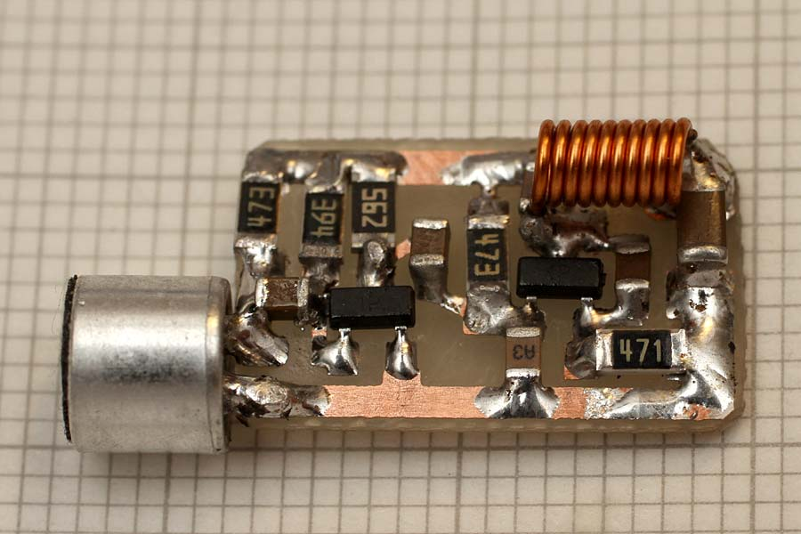
Non utilizzando i Diodi Varicap per modulare la frequenza, avremo un uscita adatta per ricevitori Wide FM, con la ricezione in FM narrow potrebbero esserci delle distorsioni, è anche possibile sentire qualcosa in AM ma la distorsione è maggiore, la migliore qualità ascoltabile in cuffia è quindi con un ricevitore scanner in modalità WFM.
La frequenza di uscita non è molto stabile e può variare di qualche MHz in funzione della temperatura e della variazione di tensione batteria dovuta alla scarica, è quindi necessario effettuare in continuazione una precisa sintonia a passi di 5 kHz.
Prove
Questo è ancora l'ottimo segnale rilevato a 434 MHz, già fuori delle caratteristiche del MMBT2222A dato per Ft minima di 300 MHz.
Con questo segnale, senza antenna si raggiungono i 50/80metri di portata all'esterno in campo aperto.
Usando antenna Tx a filo, antenna Yagi in ricezione e cuffia è pensabile di arrivare a 300-500 metri, sempre in campo aperto e lontano dai centri abitati.
La presenza di Wifi satura parecchio l'etere e riduce la prestazione dei piccoli trasmettitori. (Vedi chiavi auto...!!)
{kind=link}
Con batteria alcalina nuova da 9V la tensione è di 9,56V il consumo è di 12,4mA potenza assorbita 0,11W potenza resa in antenna circa 5-10mW.
Saldando direttamente il circuito su una presa 9V si ottiene un piccolo gruppo trasmittente con una autonomia di 20-30 ore.
Semplice schema, facilmente realizzabile con componenti tradizionali, adatto a fare in casa le sperimentazioni di trasmissione radio con pochi mW.
In genere se i componenti sono giusti e la configurazione rispettata questo schema funziona sempre, non è critico e può essere la buona base per sperimentazioni più complesse e configurazioni a più stadi.
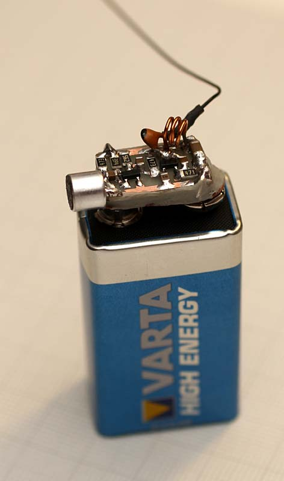
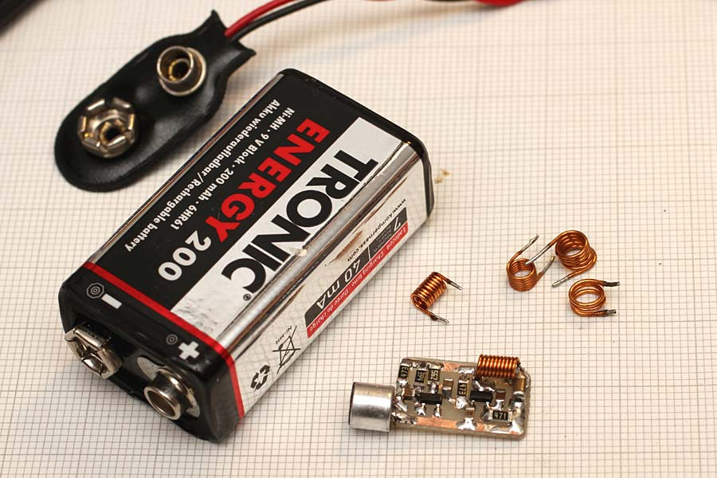
Nuova Elettronica Spia FM LX 359 come aumentare la potenza in uscita
{kind=link}
Descrizione
Pur essendo uno schema del 1979 pubblicato su Nuova Elettronica è un progetto ancora valido con ottima qualità di modulazione, aggiungendo uno stadio di potenza Classe A è possibile aumentare la potenza in uscita di oltre 10dB facendolo diventare un microtrasmettitore potente.
E' stata utilizzata la Classe A perché permette di avere una larghezza di banda di potenza tale da coprire tutta la gamma della Microspia FM, senza grandi perdite di potenza, per contro una configurazione Classe C avrebbe rendimenti migliori, ma richiederebbe più stadi e ad ogni variazione di frequenza richiederebbe la taratura della risonanza.
Il circuito così come è stato pensato, fornisce in uscita 10mW sul terminale B del PCB, per misurare questo valore bisogna adattare l'impedenza dell'uscita per i 50 ohm, lo si può facilmente ottenere con un partitore composto da due compensatori dal valore di 2-20pF.
Questo amplificatore oltre che per la microspia di Nuova Elettronica è facilmente adattabile ad altri schemi di piccoli trasmettitori FM.
Schema amplificatore lineare Classe A +10dB 87-110 MHz
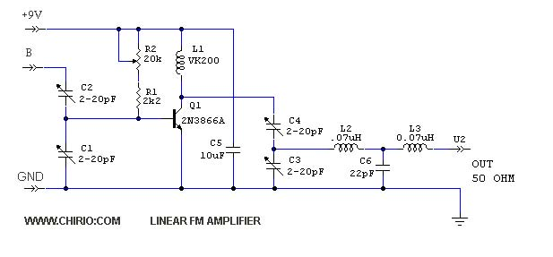
Per amplificare il segnale, viene usato un transistor 2N3866A in grado di fornire fino a 1W con guadagno > 10dB (24Volt) nel nostro caso la potenza in uscita è circa 100mW in funzione della potenza applicata all'ingresso pari a 10mW ed alimentazione batteria 9V.
Il transistor Q1 deve essere montato con un dissipatore, il dissipatore deve avere delle dimensioni contenute, (cilindrico) per non aumentare la capacità parassita. Il trimmer R2 serve a regolare il bias del transistor, partire con il trimmer tutto aperto e chiudere misurando la corrente assorbita dal 9V, nel mio caso si ottengono 100mW in uscita con una corrente di 50mA non aumentare tale valore in quanto si aumenta solo l'assorbimento facendo scaldare il transistor senza avere aumenti di potenza in uscita, perché la potenza di ingresso è troppo bassa. Chiaramente la batteria da 9V sarà in grado di fornire 50mA solo per poche ore, se necessario avere maggiore autonomia va usata una batteria di maggiore dimensione, ma non è più una microspia ma semplicemente un trasmettitore FM...
Per ottenere il migliore accoppiamento è necessario adattare le impedenze, regolare prima C1 e C2 per avere il massimo segnale in uscita su carico 50 Ohm successivamente si regolano pure C3 e C4 per avere il migliore accoppiamento in uscita.
La potenza in uscita va letta con un Power Meter ingresso 50 ohm, anche solo una resistenza antiinduttiva seguita da circuito diodo condensatore e tester può essere sufficiente per valutare gli incrementi di potenza. Anche con un oscilloscopio da 250 MHz è possibile leggere il segnale in uscita, chiaramente lo strumento ideale è lo Spectrum Analyser da almeno 1000 MHz di banda.
Il filtro composto da L2, L3 e C6 ha il compito di ridurre le armoniche in uscita, come passa basso lascerà passare solo la fondamentale fino a 110 MHz, le frequenze più alte vengono attenuate di molto.
Per aumentare di circa altri 10dB la potenza in uscita, pari a quasi 1W(teorico), si può accoppiare un altro stadio uguale, a cascata di questo magari alimentandolo a 12V, ci va in questo caso un dissipatore maggiore ed aumentare la regolazione del bias. Il filtro passa basso elimina armoniche va messo solo in uscita prima dell'antenna.
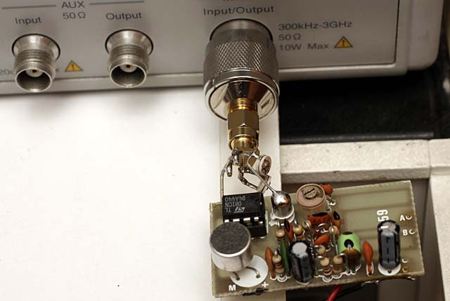
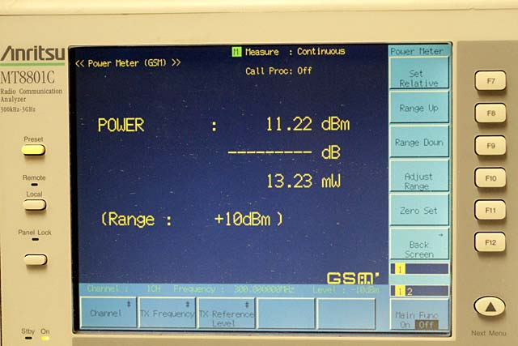
Questa la misura della potenza di uscita della LX359, si è visto che prelevando il segnale direttamente dal collettore del 2N2222 si ottiene una potenza di uscita maggiore, si vedono i due compensatori per l'adattamento di impedenza, il valore ottenuto con batteria 9V nuova è pari a 11,22dBm che corrisponde a 13.2mW. L'uscita dal punto B anche con il migliore adattamento non ci fornisce meglio di 7.8dBm. Ricordo che la misura della potenza comprende la fondamentale come pure l'energia di tutte le armoniche successive. Un buon filtro passa basso eliminerà gran parte delle armoniche, permettendo una misura più corretta della fondamentale.
Questo è il segnale del LX359 applicato all'analizzatore di spettro, la maggiore potenza di uscita si ottiene dalla parte bassa delle frequenze di uscita, cioè a 80-87 MHz otteniamo +3dB rispetto a una taratura a 108 MHz. Si possono vedere le successive armoniche che andrebbero attenuate con l'utilizzo del filtro passa basso in uscita.
{kind=link}
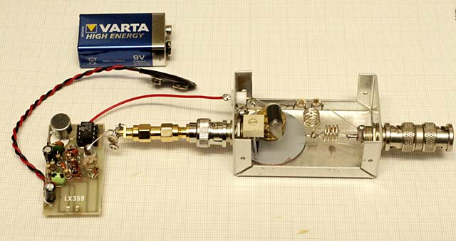
La mini Spia FM accoppiata con lo stadio finale, il tutto è in via sperimentale, e lo stadio finale ha gli spazi comodi per lavorare.
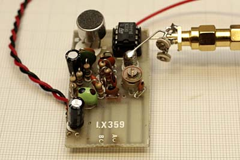
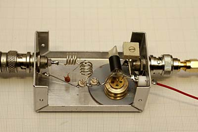
L' uscita del LX359 con il connettori SMA, si preleva l'uscita direttamente dal case del 2N2222A metallico.
Si nota il transistor 2N3866 montato con il dissipatore in ottone, bisogna mantenerlo alcuni mm distante dal fondo in metallo per ridurre la capacità verso massa. Il Filtro passa basso è realizzato con 2 bobine uguali avvolte con 4 spire di filo 1mm su diametro 6mm.
{kind=link}
La potenza in uscita dopo avere ottimizzato gli accoppiamenti, arriva a 100mW, il trimmer del Bias va regolato per avere il minimo di corrente e la massima potenza in uscita regolando più volte accoppiamenti e Bias. Nel mio caso la corrente assorbita con 9V è compresa tra i 35 e 50mA consiglio di non aumentare la corrente in quanto potrebbe creare instabilità nel transistor.
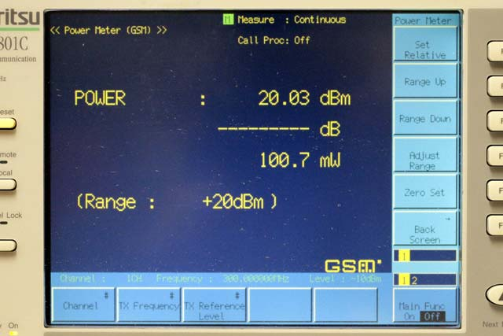
Le prove con antenna a 1/4 onda hanno dato ottimi risultati e buona qualità della voce ascoltata bene all'interno di una stanza anche a 4 metri distante dal microfono.
Integrando lo stadio finale vicino al LX359 si possono mantenere le dimensioni ridotte utilizzando componenti di piccola dimensione, inoltre una volta ottimizzato gli accoppiamenti i trimmer compensatori possono essere sostituiti da condensatori fissi SMD.
Per una buona realizzazione, la microspia, lo stadio lineare e il filtro passa basso, andrebbero inseriti in una scatola metallica e separati tra loro con uno schermo tra ogni stadio.
Con batteria da 9V l'autonomia è ridotta a 4-6 ore, se si vogliono avere maggiori autonomie, è da usare un buon alimentatore 9V da rete, oppure si passa a un accumulatore da 12V ma va rivisto il circuito e adattato per una tensione più alta.
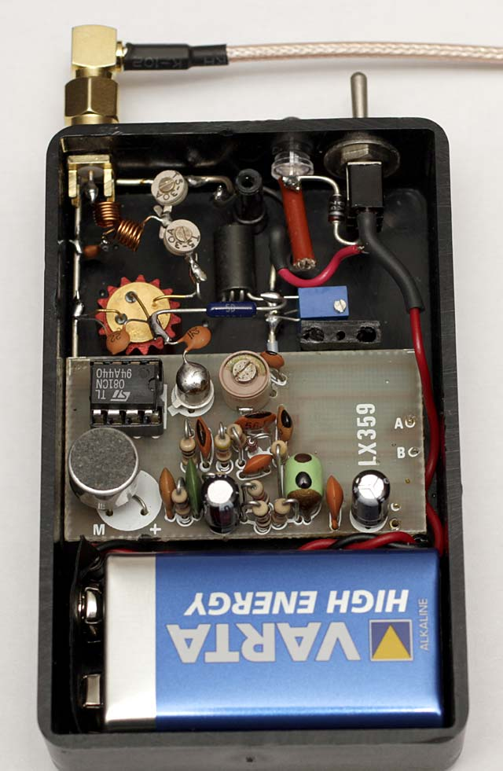
Versione definitiva, montata dentro la scatola in plastica, accoppiamento da collettore con partitore fisso 22+22pF, regolazione accoppiamento solo per l'uscita, filtro passa basso con bobine filo 0.3mm su diam 3mm.
In questa configurazione al migliore accoppiamento con 87 MHz otteniamo 280mW in uscita, sono troppi, pertanto si scende di Bias (trimmer blu) per avere solo 100mW e assorbimento di 42mA
Con un po' di pazienza si può sistemare tutto senza PCB, così ci sono poche capacità disperse e il funzionamento è stabile. Con una antenna GP sul balcone si arriva comodamente a 3KM, chiaramente su una frequenza da non disturbare le radio commerciali, tipo 86.0 MHz.
Amplificatore FM lineare +10dB con modulo DSP PLL 87-108 MHz
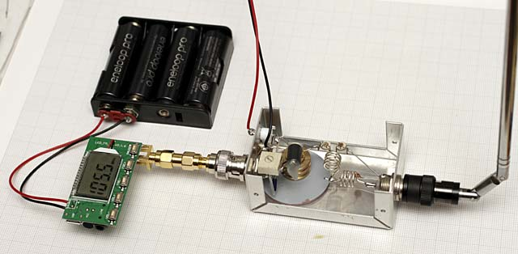
Descrizione
L'amplificatore con 2N3866A classe A è adatto per ogni aumento di segnale in gamma FM, collegandolo con il Modulo PLL si ottengono ottimi risultati, ovviamente è possibile acquistare il gruppo trasmettitore da 5-10W finito su Ebay per 70 euro, ma è più soddisfacente realizzare il tutto da soli.
Per comodità di prova ho saldato un terminale SMA sul modulo pll, l'uscita interna è già a 50 ohm quindi non sono necessari particolari adattamenti di impedenza.
Il Modulo esce con 8mW quindi possiamo ottenere un'uscita di 80mW dal lineare. Il modulo deve essere alimentato a 5.0V, nella foto viene alimentato separatamente con pacco batterie da 4,8V, mentre il finale è alimentato con 9V da alimentatore stabilizzato. Per una sistemazione finale è da prevedere un regolatore da 5V per la sezione PLL.
Per le prove si è collegato in uscita BNC uno stilo da 60cm senza particolari adattamenti, l'ascolto è buono a fondo scala, dentro e fuori casa.
La potenza in uscita si è rivelata superiore ai 80mW ma ho preferito ridurre con il trimmer il bias per stare a 80mW, il consumo è inferiore ai 50mA con 9.0V
Per una buona trasmissione è consigliabile un'antenna esterna quale dipolo verticale calcolato per la banda FM.
DSP PLL 87-108 MHz Digital Wireless Microphone Stereo FM Transmitter Module
E' venduto su Ebay a circa 9 Euro spedizione compresa.
oppure fare una ricerca usando il testo sopra evidenziato.
Alimentazione 5V cavi o miniusb, ingresso per cavo 3,5mm oppure microfono già montato sulla board, possibilità di controllare il volume e la frequenza in uscita a step di 0.1 MHz
Dalle prove si è rivelato stabile e la frequenza è precisa, la sensibilità del microfono incorporato è un po' bassa, ma la modulazione si è rivelata di buona qualità e fruscio a bassi livelli.
Ottima la trasmissione tramite cavo stereo da una fonte CD o MP3 di qualità. Si riceve un buon segnale sia con le radio in casa che dalla autoradio fuori nel parcheggio....
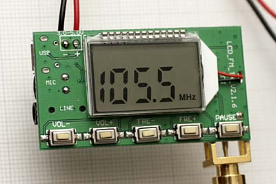
Schema amplificatore lineare Classe A - Classe C +15dB 87-110 MHz
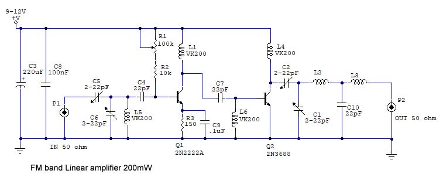
Marzo 2020.
Con questo schema si ottengono 200mW in uscita, sempre con il modulo FM descritto sopra.
Lo stadio finale diventa un classe C, mentre il pre è un classe A di potenza intermedia realizzato con 2N2222A.
Collegare l'uscita da 8mW all'ingresso e regolare i compensatori per la massima potenza in uscita, lo stesso regolare i compensatori in uscita per avere la massima potenza sempre leggendo l'uscita con un Wattmetro. La polarizzazione del Q1 va regolata al minimo per non fare scaldare il transistor, il finale Q2 deve essere montato su dissipatore come indicato sopra.
Il filtro in uscita è lo stesso dello schema lineare classe A.
La potenza massima si ottiene con 13,8V di alimentazione, ma controllare la temperatura del finale 2N3688.
La potenza in uscita arriva a 24dBm con un ingresso un segnale da 8-10mW pari a 9-10dBm il guadagno totale è di circa 15dBm.
Microspia FM a 403 MHz utilizzando un modulo rf per radiosonda GRAW-SPRENGER E085
Le radiosonde vengono prodotte in grande quantità, quelle inutilizzate vengono rivendute sul mercato Surplus. Alcune notizie sulla E085 http://www.radiosonde.eu/RS00-I/RS03J06-i.html
Questa funziona perfettamente, ha solo la trasmissione temperatura, la potenza in uscita rilevata è di 20mW (13 dBm) con batteria 9V alla frequenza di 403.730 MHz precisa come dati di targa.
{kind=link}
Nella nostra conversione viene utilizzato solo il modulo RF, va quindi dissaldato il PCB esterno nella sua completezza, rimarranno 5 piedini che corrispondo 2 alla massa, uno ingresso segnale audio, uno per il +5V e l'ultimo per il +9V.
{kind=link}
Questo è il modulo RF senza il coperchio, il montaggio componenti è fatto molto bene, si nota in alto a sinistra il quarzo e tutti i componenti SMD, gli induttori sono quelli gialli e si nota sulla destra il gruppo con la funzione di filtro passa basso elimina armoniche. L'antenna è realizzata con lamierino in acciaio rivettato sul PCB e collegato alla bobina di carico realizzata sul PCB. Per la prova della potenza in uscita ho sezionato la pista alla fine del filtro passa basso prima della bobina a spirale, adattando il segnale per i 50 ohm.
Se il modulo funziona fornendo RF in uscita, consiglio di non smanettare sui trimmer e compensatori, altrimenti senza una procedura di taratura è difficile riportare il gruppo alla iniziale efficienza.
Descrizione
Il modulo RF testato, funziona correttamente ed emette il segnale FM alla frequenza di targa pari a 403.730 MHz, togliendo il gruppo analogico esterno non ha più il segnale di audio modulato, bisogna realizzare il preamplificatore per microfono e fornire oltre a 9V anche il 5V per il modulo RF.
Lo schema da realizzare è il seguente:
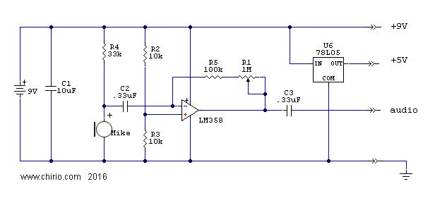
Amplificatore a guadagno regolabile, realizzato con l'operazionale LM358, il segnale amplificato deve essere applicato all'ingresso audio del modulo. Eventuali modifiche e aggiunte di filtri possono migliorare la qualità dell'audio, vedi lo schema del LX359.
Un regolatore 7805 o anche solo il piccolo 78L05 riduce la tensione del 9V ai 5V.
Una volta collegato il circuito e le alimentazioni, il tutto dovrebbe funzionare subito, è meglio comunque avere provato prima il buon funzionamento e portata del modulo FM E085 tramite ricevitore scanner su FM narrow, anche in FMW si può ricevere un buon segnale in genere con migliore qualità rispetto al FM narrow.
Con batteria 9V il consumo è di circa 30mA, abbastanza basso così da garantire una autonomia di 6-10 ore.
{kind=link}
Questa è la modifica applicata per utilizzare un microfono a condensatore. Le dimensioni non sono così ridotte, la potenza di 20mW a 403 MHz permette di andare oltre i 3 KM in campo aperto e l'oscillatore a quarzo fornisce una notevole stabilità alla frequenza di emissione.
Senza intervenire sul Modulo RF per aumentare la potenza, si ottengono già ottimi risultati a costi bassissimi, per ascoltare sempre comunque necessario un buon ricevitore per le UHF, o anche solo un RTX per le UHF tipo l'economico Baofeng uv-5r.
POWER METER per la misura delle microspie FM da 1 MHz a 800 MHz 10-100mW fs
Per chi è all'inizio e non ha strumentazione, questo lo schema giusto per visualizzare la resa in uscita della RF generata ed effettuare la migliore taratura, del resto lo scopo finale è quello di portare in antenna la massima potenza possibile, il tutto si ottiene tarando al meglio e disponendo i componenti in maniera da ridurre le perdite. Con questo semplice Power Meter è possibile misurare la potenza in uscita dalle microspie FM, sempre riferito a un carico 50 ohm.
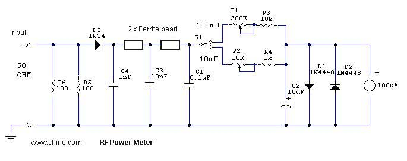
Lo schema è molto semplice, bisogna realizzare il carico da 50 ohm il più preciso possibile, qua sono state utilizzate 2 resistenze SMD 1206 da 100ohm in parallelo, in quanto la potenza massima letta sarà di solo 100mW, ma è pensabile di adottare 2 resistenze da 1W antiinduttive per raggiungere il fondo scala di 1W come pure montare una resistenza chip da 50ohm che su dissipatore sopporta oltre 100W,
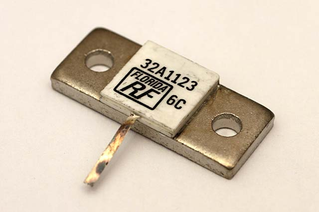
vedi la foto a destra.
Per leggere 1W fondo scala lo schema è sempre lo stesso, al posto di R5 e R6 ho messo 11 resistori SMD 1206 da 560 ohm in parallelo per un valore di 50.2 ohm, in uscita modificare il valore della R3 a 22-33k regolare la R1 con un segnale di riferimento 1W per avere la lettura di fondo scala sul uAmperometro a lancetta da 100uA fs.
Il tutto va assemblato più compatto possibile e con RF stile così da riuscire a salire di frequenza, per chi ha necessità di fare misure oltre i 500 MHz.
Il Diodo 1N34 si è dimostrato valido fino oltre a 500 MHz importante tagliare molto corti i reofori. (Con assemblaggio compatto si legge un segnale ragionevole fino oltre 1200 MHz.)
I condensatori C4, C3 e C1 compongono il filtraggio passa basso che elimina i residui di RF, le perline di ferrite compongono gli induttori del filtro, ho utilizzato le perline in quanto permettono di avere dimensioni molto ridotte di tutto il gruppo rivelatore, è possibile utilizzare al posto piccoli induttori SMD da 50-100pHenry o gli VK200 per chi non ha problemi di spazio.
Descrizione
Lo strumento più adatto per effettuare tarature è lo strumento a indice, in quanto, la taratura è per avere più uscita segnale e vedere la lancetta salire verso il fondo scala è molto meglio che leggere valori numerici, magari più utili se servono misure precise.
Ho utilizzato lo strumento da 100uA fs perchè era quello che avevo nel cassetto, è possibile usare anche strumenti da 50uA oppure collegare vecchi tester tipo ICE680R da 20uA, basterà variare il valore di resistenza in serie per avere il corretto valore di fondo scala.
Nel nostro caso saranno 10mW e 100mW.
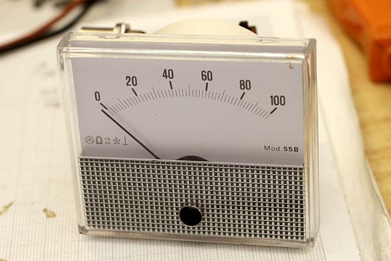
Vediamo molto bene il carico da 50 ohm rappresentato dalle due resistenze SMD 1206 da 100 ohm, saldate direttamente sui terminali del BNC, seguite dal diodo IN34 e dal circuito filtrante con capacitor e perline di ferrite, si comporta bene fino a 600 MHz, poi il diodo va in crisi, per chi vuole salire di frequenza è bene adottare un diodo per 6 GHz ed assemblare il tutto su PCB con strip per microonde.
In questo caso lavorando sotto ai 500 MHz il funzionamento è buono, del resto nel mio caso è solo un ausilio per la taratura veloce delle microspie FM.
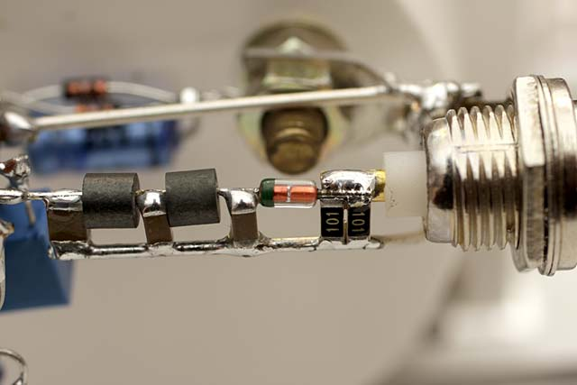
Questo è tutto il gruppo del Power Meter di prova, composto dallo strumento, BNC, circuito e trimmer per la regolazione e deviatore 10/100mW fondo scala.
Per fare prove va bene anche in aria ma i risultati più stabili al variare della frequenza si ottengono montando il tutto dentro una scatola metallica facendo buone connessioni della massa.
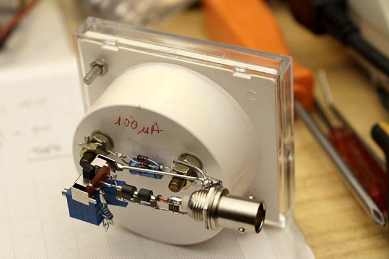
Per la taratura dei trimmer sarebbe utile un Power Meter di riferimento dove allineare i valori, in mancanza di Power Meter è possibile tarare i trimmer anche solo applicando una tensione continua all'ingresso del BNC, nel caso di questa realizzazione, con quel particolare strumento per avere 100uA fondo scala applichiamo 0,898V per ottenere 10mW fs, mentre per 100mW la tensione da applicare sarà di 3,05V, il tutto fa riferimento ai valori di RF a 100 MHz e letta su Power Meter Anritsu. Chiaramente bisogna prima applicare tensione all'ingresso e poi regolare uno dei due trimmer per raggiungere il fondo scala valore 100.
|
0 |
20 | 40 | 60 | 80 | 100 | uA |
|---|---|---|---|---|---|---|
| 0 | 1.61 | 3.12 | 5.04 | 7.37 | 10.0 | mW |
| 0 | 2.08 | 4.94 | 7.02 | 8.67 | 10.0 | dBm |
| 0 | 6.97 | 22.54 | 40.8 | 66.9 | 100 | mW |
| 0 | 8.43 | 13.53 | 16.11 | 18.25 | 20.0 | dBm |
La tabella riporta i valori di riferimento che ho rilevato con lo strumento da 100uA, in rapporto al segnale ingresso, c'è da dire che utilizzando uno strumento diverso e componenti non dello stesso tipo, i valori possono variare di parecchio, pertanto i dati di tabella vanno visti solo come esempio.
Lo strumento Power Meter pur essendo uno strumento semplice senza la presunzione di competere con la precisione, si è comunque rivelato molto utile per la messa a punto di circuiti RF anche a più stadi, dove per ogni stadio si cerca la migliore taratura con i valori più alti e non la lettura precisa dei valori.
Amplificatore FM lineare +30dB con Power out 2W 1-930 MHz Aliexpress
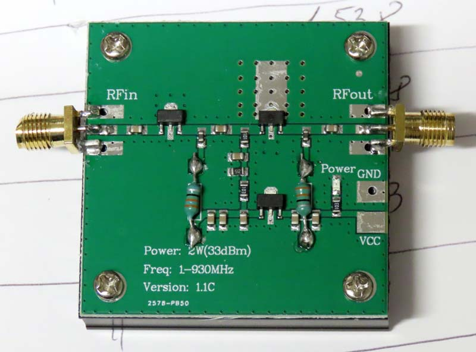
Descrizione
Marzo 2026
L'Amplificatore FM lineare +30dB con Po da 2W campo da 1-930 MHz Aliexpress è una soluzione economica per aumentare la potenza applicata all'antenna, per ogni aumento di segnale in gamma FM, collegandolo con il Modulo PLL si ottengono ottimi risultati.
|
MHz |
Input (dBm) | Output (W) | |
| 100 | 13.5 | 3.12 | |
| 200 | 13.5 | 2.83 | |
| 300 | 13.5 | 2.65 | |
| 400 | 13.5 | 2.50 | |
| 500 | 13.5 | 2.16 | |
| 600 | 13.5 | 1.78 | |
| 700 | 13.5 | 1.53 | |
| 800 | 13.5 | 1.34 | |
| 900 | 13.5 | 1.03 | |
| 1000 | 13.5 | 0.73 | |
| 1100 | 13.5 | 0.46 | |
| 1200 | 13.5 | 0.31 |
Per una buona trasmissione è consigliabile un'antenna esterna quale dipolo verticale 50 ohm calcolato per la frequenza di lavoro.
Serve sempre in uscita filtro passa basso per eliminare le armoniche.
© Roberto Chirio: all rights reserved.